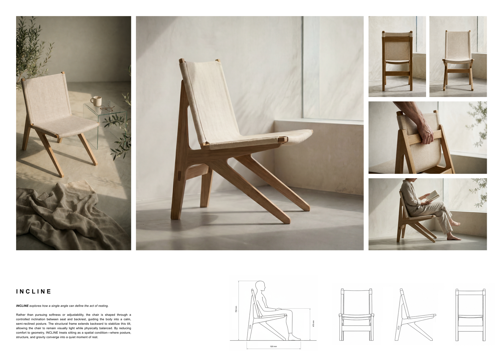

A chair developed as a small study in form and structure — reducing a seat to a set of joined members, testing how proportion, joinery, and material come together at the scale of the body.
一把作为形式与结构小研究的椅子——将“坐”还原为一组接合的杆件，在贴近身体的尺度上检验比例、接合与材料如何相互成立。
